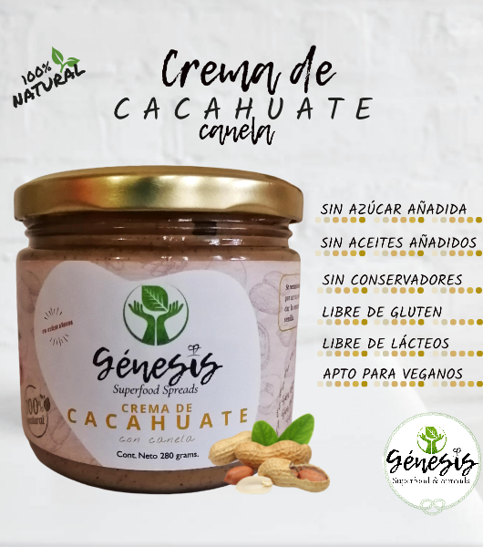
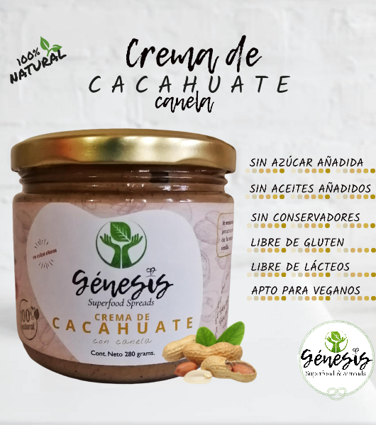
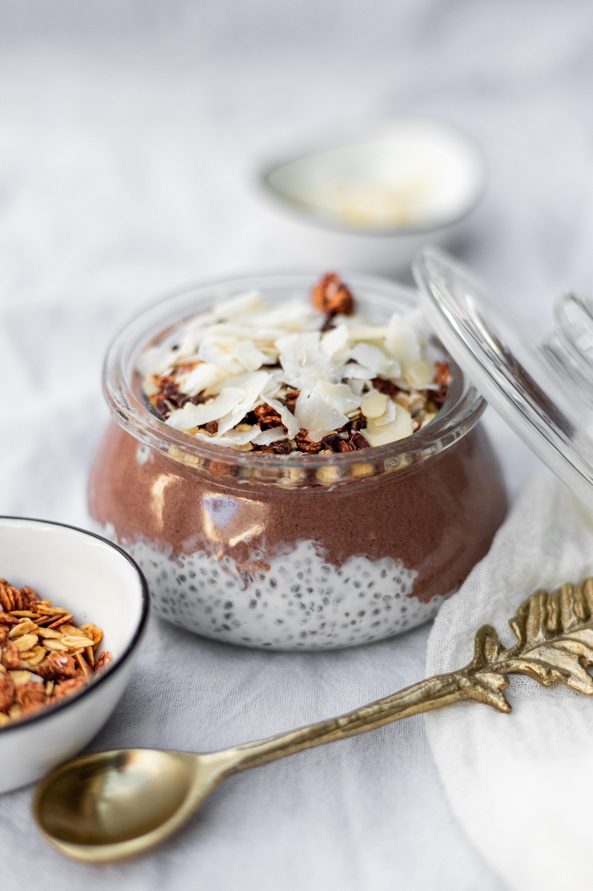
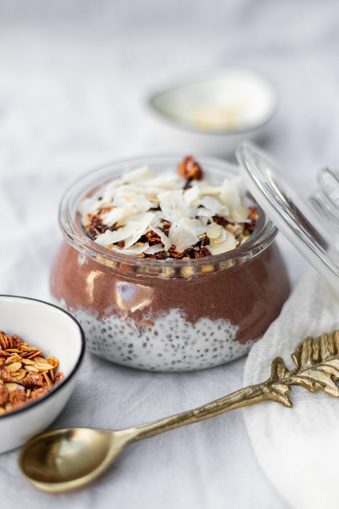

Blog
Cremas de frutos secos

1Almendras con canela
Saludables y deliciosas cremas de frutos secos para untar o usarlas en tus ricas preparaciones 😋, dando un sabor y textura que te van a encantar.
2Cacahuates con canela
La Crema de Avellana Cacao de @genesis_spreads, contiene un 91% de avellana, esto hace que contenga una cantidad alta de nutrientes, por las propiedades que ésta posee; es alta en vitaminas E, vitamina B, magnesio, fosforo, hierro, zinc, calcio, proteínas, fibra y antioxidante. Está endulzada con eritritol y fruta del monje, que son endulzantes naturales.
3Avellanas con caca
La Crema de Avellana Cacao de @genesis_spreads, contiene un 91% de avellana, esto hace que contenga una cantidad alta de nutrientes, por las propiedades que ésta posee; es alta en vitaminas E, vitamina B, magnesio, fosforo, hierro, zinc, calcio, proteínas, fibra y antioxidante. Está endulzada con eritritol y fruta del monje, que son endulzantes naturales.
Galeria
.png) 

.png)
.png)
.png) 



.svg)
Galeria de Recetas
Productos